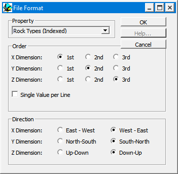

Exporting tabulated columns
This is an export file format (created from the Export Block Model > Tab Columns item from the File menu) that contains a tab delimeted ASCII voxel model of the either the rock type index or any one geophysical rock property, together with the voxel coordinate, in whichever voxel order is specified by the File Format window which appears when you slect this option.
The cube size is determined by the Geophysics cube size.

| GROUP | NAME | FUNCTION |
|---|---|---|
| Property | Selection of which property to export | |
| Order | X,Y,Z Dimension | Loop order for writing out voxels (1st means outermost loop) |
| Single Value per Line | File is written with one voxel per line (instead of whole row of voxels) | |
| Direction | X,Y,Z Direction | Direction of writing out voxels (East to West vs West to East etc) for each index |
Noddy · open source under the MIT licence · Loop3D/noddy_qt